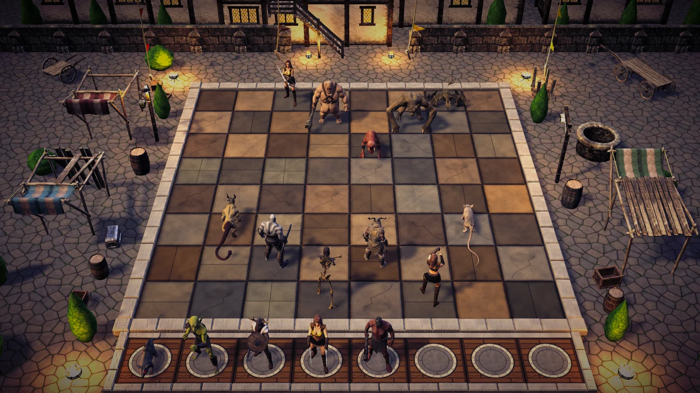
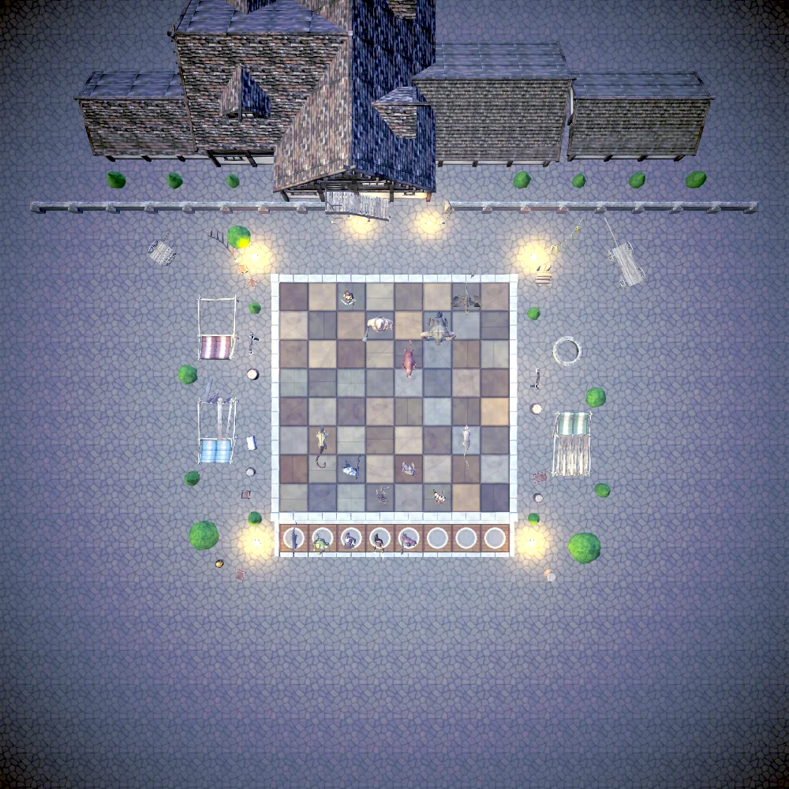

Arena
Courtyard
A cobbled town square at dusk, ringed by market stalls and lamplight.

The Courtyard is where Warspire began: a cobbled square inside a walled town, with timber-framed houses and a lit doorway beyond the far wall. The board is paved in warm brown and grey slabs with a pale stone rim.
Market stalls with striped awnings stand down both sides, among barrels, crates, handcarts, a stone well and clipped green shrubs. Pennants hang from tall poles and iron braziers burn at the corners, throwing warm pools of light across the cobbles.
Light and weather
Courtyard arrives in the Dusk mood. A low warm sun, long shadows and lamps already lit.
The air is clear: no weather falls on this arena.
The mood is only the starting light. The SCENERY row on the title screen relights the arena as Day, Night or Moonlit instead.
From above

Rules
Playing here
You choose your own arena. On the title screen, before you press Find Match, the ARENA row has an arrow on each side: tap them to step through the 5 arenas and a last choice, RANDOM. The board behind the menu changes at once, so you see each one before you commit. A new player starts here.
With RANDOM chosen, a different arena is rolled each time the title screen opens, which means once per match, and, while the game stays open, never the same one twice in a row. The row then shows which arena the roll picked.
The choice belongs to you alone. It is saved on your device and is never sent to the other players, so all 8 players in a match may each be looking at a different arena. Whichever you pick, you see every fight of the match there, your own and the ones you watch.
The title screen is described in The interface.
Other arenas
 GladeA forest meadow in daylight, with a stream curling round the board.
GladeA forest meadow in daylight, with a stream curling round the board. DunesA sun-bleached desert ruin among cacti, boulders and distant mesas.
DunesA sun-bleached desert ruin among cacti, boulders and distant mesas. FrostA snowbound fort yard under falling snow, walled in stone and ringed by pines.
FrostA snowbound fort yard under falling snow, walled in stone and ringed by pines. CryptA graveyard by moonlight: headstones, candles and cold green spirit light.
CryptA graveyard by moonlight: headstones, candles and cold green spirit light.